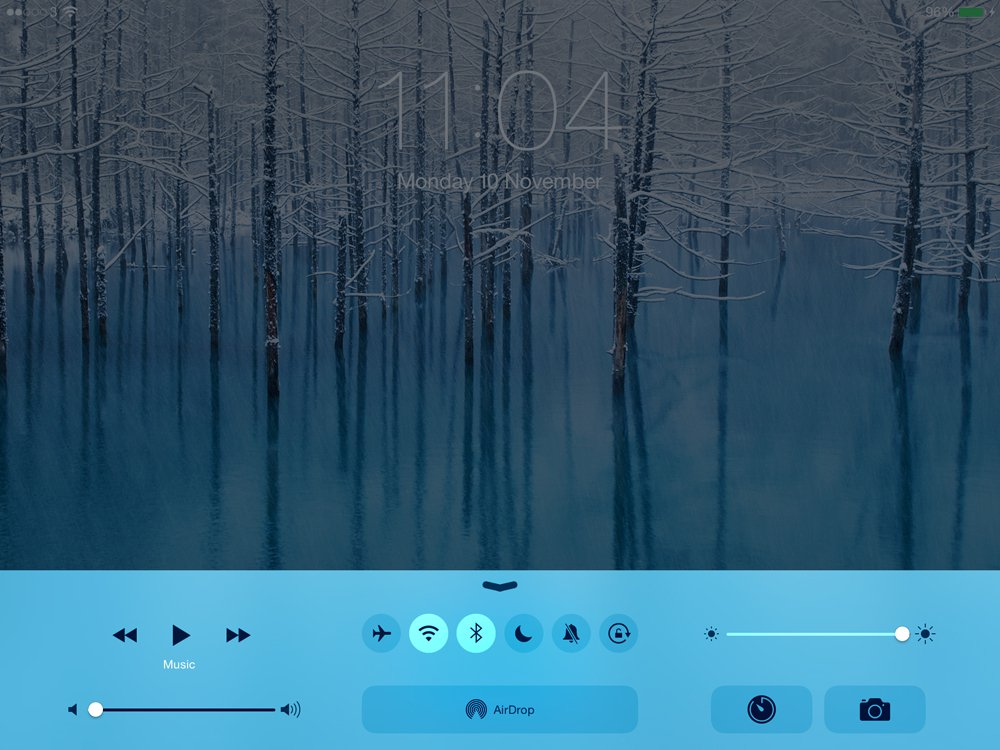
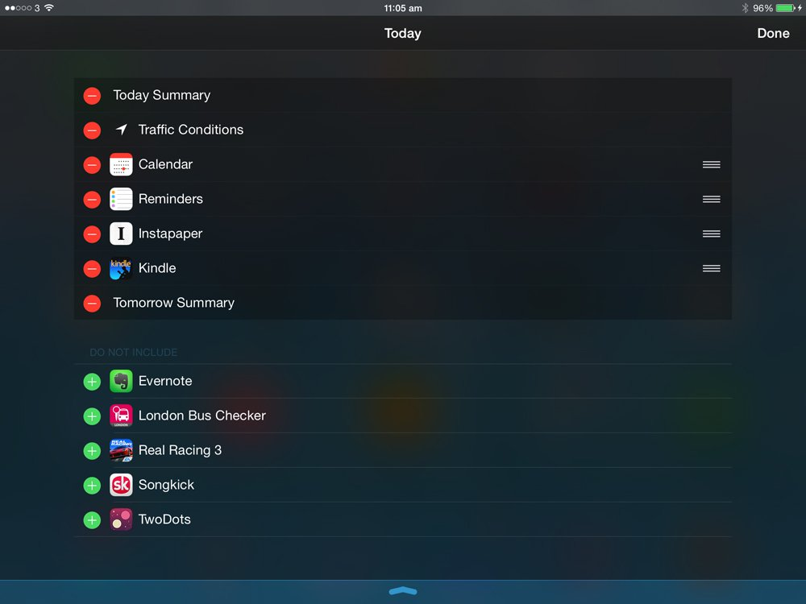
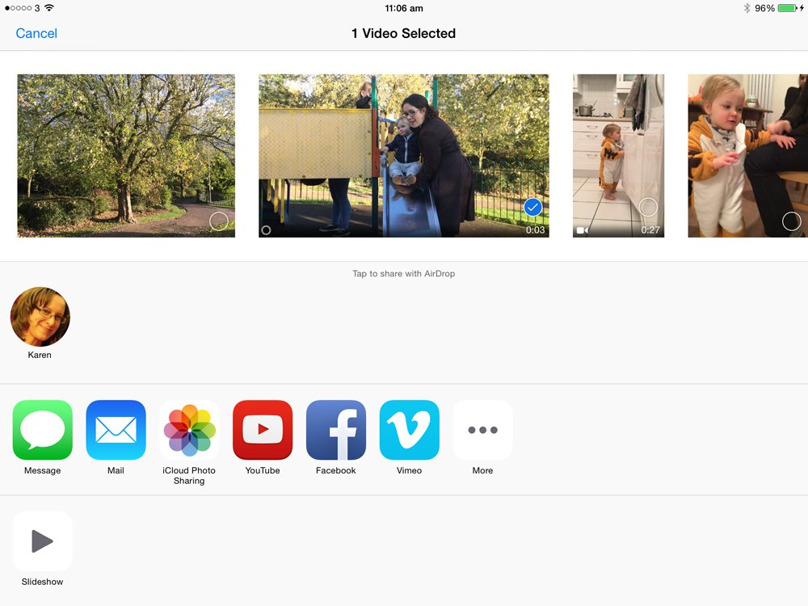
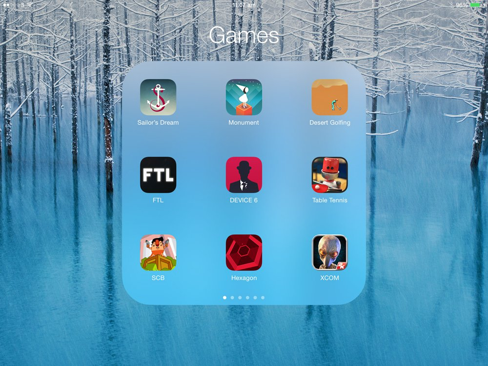

leave a comment
When will iOS 9 come out, what features will it offer and which iPads, iPhones and iPod touch devices will it run on? Web analytics suggest that iOS 9 is already being publicly tested... although we're not convinced. Plus: our wishlist of 22 features we'd love to see in iOS 9, and reports that iOS 9 will involve a huge amount of speed tweaks and bug fixes. iOS 8 has been with us for a couple of months, but we're already thinking about iOS 9. When will it come out, what features will it offer and which iPads, iPhones and iPod touch devices will it run on? In our iOS 9 rumour roundup article we will gather together all the clues and hints about iOS 9, and update it regularly with all the information available about iOS 9's launch details. At the moment, with four months to go before we're likely to even see a preview of iOS 9, we've not got much to go on. Mind you, we can make pretty confident predictions about iOS 9's launch date based on past behaviour (Apple is very much a creature of habit when it comes to iOS updates, so we've got a decent idea of when iOS 9 will come out), and there have been some reported sightings of iOS 9 in web analytics - although we're not convinced that this means iOS 9 is being publicly tested, as we explain further down. We can also talk about the features Apple fans would like to see in iOS 9. After our discussion of iOS 9 launch date rumours, read on for our wishlist of 22 iOS 9 features: the functions and upgrades we'd love to see in iOS 9. Apple updates its iOS software platform for iPad, iPhone and iPod touch once a year, as regular as clockwork. iOS 9 - which we hear is codenamed 'Monarch', after an American ski resort - will launch in 2015, and the chances are very good that it will be unveiled at WWDC 2015 in the summer (and made available for beta testers and app developers), and then launch to the public alongside the next generation of iPhones in September. The launch of iOS 9 is presumably still months away; we expect the unveiling at WWDC 2015 in June, followed by a full launch alongside the iPhone 6c/iPhone 6s/iPhone 7 in September. But it's possible that Apple staff are already publicly testing prototype builds of iOS 9. Consider us unconvinced, but here's the theory. A tech writer named Roman Zavrel contacted Macworld recently, after discovering that versions of iOS 9 seemed to be showing up on web analytics for his site. Zavrel works for a Czech-language technology website called letemsvetemapplem.eu. According to the site's traffic data, three visits were made in January using iOS 9.0. We looked into this using our own analytics, and sure enough, Macworld has recorded ten page views from devices running variants of iOS 9.x in the past few months. (Six were recorded as iOS 9.0, three were iOS 9.2 and one was 9.0.9.) If you're not familiar with Google Analytics, we generate these figures by drilling down within the 'Browser & OS' section of the service's Audience section, and choosing to look at versions of iOS 9. We scroll down past the most popular versions and a few rogue page views appear under variants of iOS 9.x: these are clearer if we run a search on the number 9. Here's how that looks for the past couple of months: Our understanding is that Apple developers normally only test pre-release OS builds internally, so this external testing process seems to be a new strategy. Interesting stuff, and an excellent spot, but Macworld remains broadly sceptical, at least for now. If you look at the picture of our analytics above, you'll notice that iOS 9.x variants aren't the only ones to come up when we ran a search on the number 9. We also got iOS '10.9.5'. Which suggests that Apple is really ahead of itself. What's more, the earliest of the iOS 9.x variants to visit the site was on 23 October (iOS 9.0). So if this theory is right, work on iOS 9 has been underway for a long time. We're not sure how easy it is to spoof the version of iOS that shows up on a jailbroken device, or how often Google Analytics gets confused about OS version numbers, but we're more inclined (in the absence of further evidence) to believe that these are analytical anomalies rather than evidence of iOS 9 public testing. We'd love to be proved wrong, however. Apple likes to include at least one showy marquee feature each time it updates iOS, something it can whip up some hype around at the launch presentation: iOS 8 had Health, Continuity and Apple Pay (even though we still haven't got the latter yet this side of the Atlantic), iOS 7 had Control Center, Touch ID and (later) CarPlay, iOS 6 had Maps and Do Not Disturb. But what will iOS 9 bring? We're hoping for something a bit more exciting than this - and trust that Jonny Ive's team will capture our imagination as usual - but the main rumour we've been hearing so far is that iOS 9 will focus on speed and stability. Wake up at the back. 9to5Mac quotes sources who reckon that the Apple team working on iOS 9 are waging a "huge" effort to improve stability and increase speed, as well as zapping bugs that may hamper performance - to the extent that these efforts could even be touted as the principle benefit of updating. Many iPhone and iPad owners may be baffled by this, since the iOS experience on reasonably up-to-date iPads and iPhones is extremely slick and smooth. But for anyone who's tried to stick with an iDevice for more than a few years, this will actually sound like a godsend. iOS 7 and iOS 8 were both widely criticised for hobbling the speed of devices at the lower end of compatibility; my own faithful iPhone 4 essentially came to the end of its useful life after installing iOS 7, and many iPhone 4s models encountered a major speed hit after upgrading to iOS 8. You can't keep adding whizz-bang features and expect legacy devices to cope with the extra demands without suffering performance dips, which is why an iOS update that takes that side of things seriously would be something to applaud. 9to5Mac adds that iOS 9 will also see more serious efforts to minimise the size of install files, which makes a lot of sense after the debacle surrounding iOS 8. (Don't imagine that there won't be any whizz-bang features at all, of course. We've also been hearing that Apple may overhaul the directions offered in Maps, for a start, and take a look at our features wishlist lower down to see some of the other functions we want to see in iOS 9.) Each time Apple updates iOS, it adds a couple of new iPads and iPhones to the list of compatible devices, and knocks one or two older ones off. At time of writing, the following devices are compatible with iOS 8: iPad 2, iPad 3, iPad 4, iPad Air, iPad Air 2 iPad mini, iPad mini 2, iPad mini 3 iPhone 4s, iPhone 5, iPhone 5c, iPhone 5s, iPhone 6, iPhone 6 Plus iPod touch (fifth generation) iOS 9 will very likely launch alongside a new iPhone (or set of iPhones) and will of course be compatible with them. Most likely it will be followed by new iPads a month later, and again, will work with them. But we can also expect to lose some devices from that list. Here's our prediction of the iPads, iPhones and iPod touch models that will run iOS 9: iPad 3, iPad 4, iPad Air, iPad Air 2, iPad Air 3*, iPad Pro* iPad mini 2, iPad mini 3, iPad mini 4* iPhone 5, iPhone 5c, iPhone 5s, iPhone 6, iPhone 6 Plus, iPhone 7 series* iPod touch (fifth generation) Devices marked with a * are unconfirmed, and may have different names - or never launch at all. I've only put one entry for the new iPhones, but there's a decent chance we'll see more than one: perhaps an iPhone 6c and an iPhone 7? Opinions on this are divided in the Macworld offices. What's our thinking with these predictions? Well, iPad compatibility has historically moved upwards quite slowly: the iPad 1 was the bottom rung for three versions of iOS/iPhone OS, and now the iPad 2 has done the same. The iPad 2 has also been recorded as suffering some speed issues with iOS 8. We think its time has come. The iPad minis are harder to predict, because we've got no historic data to go on: all three iPad mini models run iOS 8, and we have no idea how long Apple expects them to last. But the iPad mini 1 is starting to feel pretty slow compared with the two newer models, and could well drop off compatibility with iOS 9. iPhones tend to move quicker, lasting as the bottom rung for one or two versions. The iPhone 4s has been bottom for only a single version (the iPhone 4 could run iOS 7) but plenty of people have claimed that iOS 8 slowed down their iPhone 4s handsets. We don't expect the 4s to be able to run iOS 9. And finally, it would be a dramatic move for Apple to remove the iPod touch line entirely from iOS 9 compatibility, so this may depend on whether Apple updates the iPod touch. If it doesn't, we'd expect the 5G iPod touch to remain compatible with the latest update. A final note: one of the iOS 9 rumours we've been hearing (see the 'New features and enhancements' section, above) is that the next iOS update will focus heavily on providing an exceptionally stable and fast user experience. Hopefully this will be achieved via ruthlessly efficient coding and the avoidance of feature creep. But another method would be to raise the compatibility bar quicker than usual and exclude devices more than, say, two years old. This could be bad news for the iPhone 5 and the iPad 3 and 4 t's very early days, and we don't expect leaked screenshots to start appearing for a while yet. But a few designers and artists have started coming up with design ideas for iOS 9's interface. (See also: The 10 weirdest Apple concept art designs.) One we particularly like is this one by Yasser Farahi, part of a set devoted to conceptualising the iPhone 7:
That's right: Farahi has imagined the unimaginable and turned iOS's icons into circles. It was said that the rectangle with rounded corners was Steve Jobs' favourite shape, and we've all been tapping rounded-square icons for so long that circular icons just look wrong - but also radically new and vaguely exciting. The primary-school mathematician in me feels the need to point out that circles tessellate less effectively than squares (and even rounded-corner squares) and the above system reduces the available space for developers to design in. But we're used to circular icons in Mac world - iTunes, the Mac App Store, most of the browsers - so why not?Update, 5 March 2015:
iOS 9 release date rumours: When will iOS 9 come out?
Update, 12 January 2015:
iOS 9 rumours: New features and enhancements
iOS 9 rumours: Which iPads, iPhones and iPods will be able to run iOS 9?
IOS 9 rumours: Images, screenshots and concept videos
iOS 9 features wish list
So much for the rumours and speculation about when iOS 9 will launch, and which devices it will run on. But what features can we expect in iOS 9? Hopefully Apple will include some of these.
iOS 8 has reasonably decent parental controls: you can go into Settings and set quite detailed restrictions on the categories of music and films that can be played, the apps that can be used, the websites that can be visited and the settings that can be changed. The problem is that these then apply globally, to anyone who uses the device, until you enter a passcode and switch them all off.*
Microsoft has demonstrated a better way to do this, with Kid's Corner on Windows Phone 8, and Android devices also offer more user-friendly parental controls
More powerful, too. As well as per-account restrictions (which links to request number 2, below), we'd like to see extra types of parental control in iOS 9: one possibility would be time limits on certain apps so that you can allow access to games but for a limited duration. If you could specify content types as well - so that all games are restricted en masse but educational apps are positively encouraged - that would be ideal.
* You can also use Guided Access to keep a child in a single app, of course, although that creates other headaches and definitely doesn’t encourage general familiarity with the device. And by the way, have you tried using Restrictions? Disallow certain apps, allow them again and - abracadabra - the app icons have all been moved around the screen. It’s a bit of a mess, to be honest.
Following naturally on from parental controls, many users would love to be able to log into iOS under a specific user name or account, enabling their preferences, bookmarks, apps and media content to be kept separate from someone else who uses the device regularly. This would be convenient and allow for a more personalised experience, as well as making parental controls easier to implement. And you could have a 'guest' account to stop visiting family from jumping on to your social media accounts and viewing all your photos.
Perhaps Apple would prefer us to all buy our own personal devices, but its creation of the Family Sharing feature suggests that it might be open to this concept in iOS 9.
My retired parents and parents-in-law all have far busier social lives than I do, and it's not unusual to find that they're out when my son and I call them on FaceTime. By the time they call back the youngster has often gone to bed, and they have to settle for a conversation with me.
Wouldn't it be nice for us to be able to leave them a video message? I always find it odd that you can't. Perhaps someone has worried that they would use up too much storage, but you could always make it an optional feature that's enabled at the recipient's end - and you could cap the messages at 30 seconds, which at 720p shouldn't take up all that much space.
And another thing about FaceTime…
Skype allows group conversations between up to 10 people, and it feels like Apple is handing an advantage to its rival by limiting FaceTime calls to just two.
This was heavily rumoured in the run-up to iOS 8's launch, and is again doing the rounds in reference to Apple's semi-mythical iPad Pro. There's a reason for that: it's an incredibly appealing idea.
iOS 8 allows a degree of app multitasking, but rather than just previewing screens in multitasking we'd love to be able to interact with two screens in tandem: comparing a web page with a Pages document while making notes, for example, or checking a text of suggested dates against your availability in Calendar. They wouldn't even need to be related: many of us would like to be able to view an entertaining video while putting together a piece of work, even if it might affect productivity somewhat.
This of course makes more sense visually on the iPad, because of its larger screen, but the iPhones are getting so big now that it's not an impossibility in the smartphone format.
Apple is a brilliant company that leads the world in multiple fields but (say this quietly) it isn't automatically the best at everything. Building browsers, for instance: you've got to be a reasonably hardcore Apple fan to reckon that Safari is indisputably the finest mobile web browser available to humanity, even if most of us think it's okay.
Nope: a lot of iOS users would like to use Chrome, or Dolphin, or another rival web browser on our iPads and iPhones - but while that option is available, you can't make anything other than Safari the default browser, so Mail links, Twitter links and so on will always default back to Safari when you tap them. The same applies to mail apps, calendar apps and various other areas where Apple has a horse in the race but wouldn't beat all-comers if it hadn't hobbled the competition.
We'd love to see the option to pick your own default apps so you don't have to use Apple's if you don't want to.
For that matter, it's annoying that you can't delete any of the pre-installed Apple apps that are waiting on your device when you first power it up, for reasons of space and tidiness. Some are hard to object to, such as Messages (even though some prefer to use WhatsApp, at least on iPhone). Others, such as Stocks and Newsstand would get the bum's rush the second Apple allowed it.
And if we can't delete them, Apple, at least let us hide them properly - the days of a forlorn folder on the last screen labelled 'Apple crap' should be past. A simple toggle in the Settings app to show or display each app is the least we ought to expect.
Ask someone what they want from the next generation of iOS devices and they will nearly always mention one thing: "Better battery life!" Of course we agree, but we also recognise that battery life is a question of compromises, and just asking it to be better carries the implication that something else - price tag, weight, size - will get worse, or fail to get better when it could have done.
So instead let's get specific about what we'd do to improve matters. We think everyone would benefit from an optional, platform-wide battery-saving mode that would reduce brightness and volume, switch off Wi-Fi and Bluetooth, shut down unused apps and switch off location data and notifications. Competitors such as Samsung and Sony have introduced similar features to help prolong that vital last 10 per cent of a smartphone's power, and there's no reason why Apple can't do likewise.
iPhones are notorious for fast-draining battery life so the option to disable all power-hungry functions with a single toggle in Control Centre, or to tell iOS 9 to automatically enter this mode when it reaches a certain point of battery life, would be extremely welcome, and could save a few iPhones from dying at crucial moments.
We mentioned Control Centre just now. We adore the convenience of this little bundle of regularly used toggles and sliders, but we think it could be even better with a tiny bit of customisability.
Say you never use Do Not Disturb mode, or prefer to access the Camera from the lock screen rather than from Control Centre (don't we all?). Wouldn't it be great if you could swap those controls out of the Control Centre and replace them with other settings you use more often - such as switching vibrate on or off, or activating a preset range of Restrictions so you can hand the device straight to your child (this would require some tweaking of the parental controls, as mentioned in request number 1, since at the moment switching off Restrictions makes iOS forget everything you selected).
Our colleague Jim Martin also demands that the Wi-Fi SSID should be shown in Control Centre so that you can swipe up and quickly check which network you’re connected to, instead of having to jump into Settings to sort it all out. Good idea, Jim.
You could even add frequently used apps (or settings for those apps) to the Control Centre, or harmless kid-friendly games you don't mind being accessible without inputting a passcode.
The problem with Siri (other than self-consciousness when you're using it in a busy area) is that it sends every voice command back to HQ for decoding by Apple's back-end servers, which means it doesn't work when disconnected from the internet.
Surely the easier stuff - setting reminders and alarms, and firing off text messages - could be handled locally? This would be a great help when driving home with no mobile signal and trying to send a hands-free message ("I'm running late!") to a spouse.
At the moment the Hey Siri feature is a pale imitation of the science-fiction dream it ought to be. iOS 9 can turn that dream into a reality.
The problem is that Hey Siri is only available a tiny proportion of the time - you need to have your iPhone or iPad plugged in, in order for iOS to be listening out for your voice, for reasons of battery preservation. We've love it to work unplugged too. iPhone sitting on the train table? "Hey Siri! Send an email to my wife."
Obviously Apple would want to implement fairly stern battery warnings when you chose to activate this option, but it would be nice to have the choice.
With iOS 8 Apple cautiously opened up to the idea of user customisation, allowing third-party system-wide keyboards and - yes - widgets to be installed (although Apple calls them Extensions). These are miniature versions of apps that sit in the Notification Screen and perform limited functions.
This is all great, but it would better still if we could install the widgets in other places - such as on the Home screen itself, which is where widgets found fame on Android. Having a weather widget constantly sitting in the background of the Home screen could be handy, as could a sports news ticker.
This one, I'm afraid, is a little bit like the non-specific request for a better battery life. We'd just like the install file, when we upgrade from one version of iOS to another, to be smaller. We don't know the details, and we don't care how - we just want it to be smaller.
Yes, it's non-specific, and yes, it's probably incredibly annoying to hear if you're a software developer at Apple. But given the amount of storage available to the average iOS device - and remember that iOS is developed for Apple devices only, so this is a totally controllable environment - it is unacceptable that iOS 8 demanded 5GB or even 6GB in order to update. Many users had to clear all of the media and most of the apps from their devices, and many more didn't update because they didn't want to do this - and a mixed-OS user base is the last thing Apple wants.
(Yes, as we pointed out at the time, you can install iOS 8 on to iTunes and get around the storage requirements that way. But not everyone, unbelievably, reads Macworld; and not everyone who owns an iPhone or iPad also owns a Mac or PC.)
A small complaint, again from our colleague Jim Martin.
iPads, for some inexplicable reason, don't get the Calculator app, which is a perfectly useful thing to have (particularly since it sits in Control Centre on the iPhone). It would be nice for iPad owners to get the same feature.
There are plenty of ways iMessage could get better. For one thing, it would be convenient to be able to tell Messages to always (by default) send messages as a text rather than an iMessage if the signal is bad. At the moment you have to wait for a message not to send before you can tap and select Send as Text, and that's pretty frustrating. Update, 19th March 2015: In fact, this is already possible in iOS 8: you simply go to Settings > Messages > and toggle the Send as SMS option. Thanks to Twitter user Esteban for pointing out this error.
We’d also like to be able to set up groups for messages - and even better if you could alter those in the group list from time to time, perhaps updating it to add new friends or colleagues.
And Mail isn't perfect at handling groups either - it should be much, much simpler to emails a select group.
Apple has allowed select social-media partners into the fold (sometimes it's hard to escape the feeling that these decisions are made with one eye on the political ramifications: what the partner can offer in return, and how it will affect Apple's direct rivals). But there are plenty of popular companies that don't make it into the default sharing pane.
Vine is an obvious absentee from the sharing options from a video in Photos, but we really ought to be able to customise the list of options.
Simple, really: Apple Maps is playing catch-up with Google Maps in a few areas, but the most notable and important is public transport directions.
Google Maps can offer advice on which bus will take you where you want to go: where to board, and what time the bus will arrive. It does the same for train journeys. Apple Maps… can't do these things, and it's about time it did.
Contacts' ability to scrape contact information and images from Facebook can be quite handy, but it can also create headaches and muddled-up data. It's a process that could do with a bit of a spring-clean: to help avoid duplicated contacts, for one thing, and to neaten the whole thing up.
We're pretty sure this will get sorted in iOS 9, but it's still worth mentioning. Let's put it this way: Photos isn't the most user-friendly it's ever been.
Try creating an album and adding photos to it: you'll find them in both the camera roll and the photo stream. Neat-freaks (like us) who try to tidy them up by deleting them from the camera roll will find that they are promptly removed from the album.
We'd like iOS 9 to incorporate a Photos app that doesn't involve so much duplication, and is generally a bit easier to use.
I use folders a lot: my first screen is mostly single app icons, but the second one is almost entirely folders. This is how I keep it to two screens.
But without wishing to overcomplicate matters, I'd love to be able to set up folders within folders. Take my big Games folder, for instance: this would benefit from subfolders for RPGs, driving games and so on.
It's not very Apple, and not very 'mobile' either - but it would help those of us with lots and lots of apps.
I'll be honest here: I don't know the technicalities (and legalities) behind Caller ID, and the constraints they place on Apple's ability to block people who hide it. Because other than some weird legal loophole, I can't think of any sensible reason why Apple doesn't let you do this.
Since iOS 7 you've been able to block specific numbers, whether or not they're in your Contacts list. But as we all know, there's an easy way around that block: simply hide your Caller ID. Sure, the message No Caller ID will be prominently displayed when the call comes in, so the wise recipient will know that they probably shouldn't answer: it's a call centre, or pre-recorded spam, or your sociopathic ex-boyfriend. But you still get the annoyance of hearing the default ringtone, and wondering for a moment if something important is up.
(And you won't know absolutely for sure that it isn't. Maybe some well-meaning klutz has advised your mother-in-law to switch off the Caller ID on her iPhone - "They can listen in, Ethel!" - and now she needs picking up from the airport. Of course that's not true, but a tiny part of you will still worry that maybe it is...)
So please, Apple: add a simple option that lets you block all calls that hide their Caller ID. Okay, so Ethel will still be in trouble, but you could add a message to the menu where you hide Caller ID that warns that this may happen. Even better would be if the blocked caller heard an automated message that explained why they weren't getting through - but perhaps I am letting my imagination run away with me.